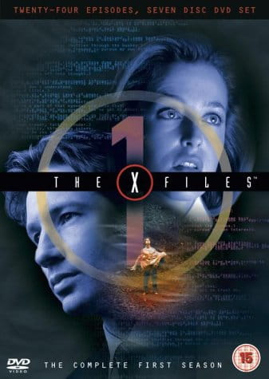
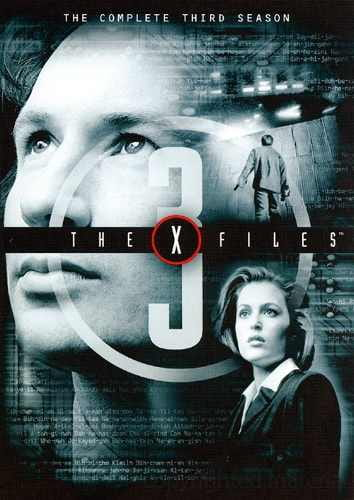
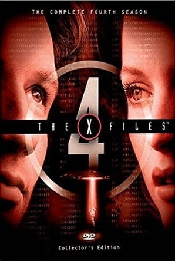
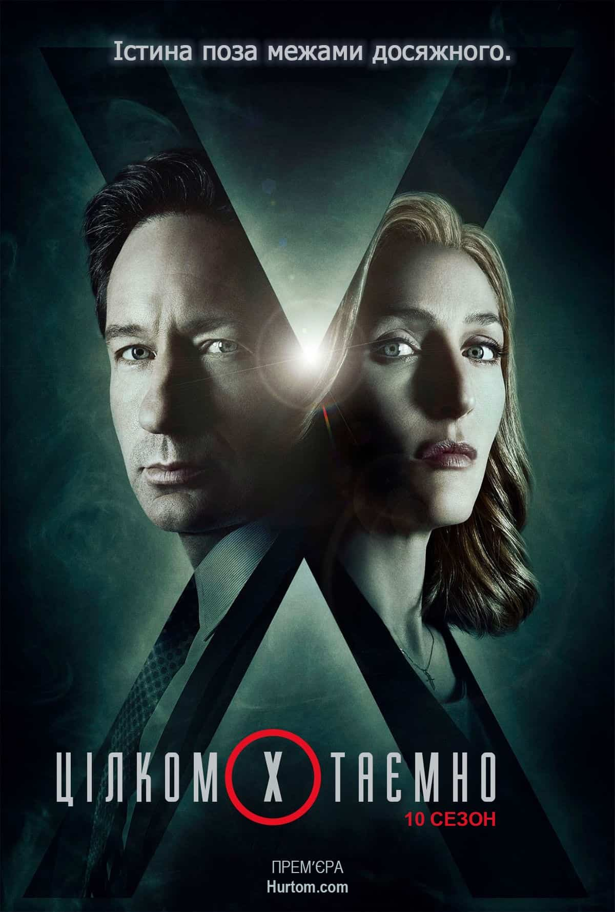

The X files
«Цілком таємно» або «Секретні матеріали» — американський фантастичний телесеріал. Уперше був показаний телеканалом Fox 10 вересня 1993 року й завершився через 9 років — 19 травня 2002 року. З 1993 по 2002 рік було знято 201 епізод. Автор ідеї — Кріс Картер. Серіал з великим успіхом був показаний в різних країнах світу, поміж них і в Україні. На основі серіалу 1998 року був знятий повнометражний фільм «Цілком таємно: Боротьба за майбутнє». 24 липня 2008 року відбулася прем'єра фільму «Цілком таємно: Я хочу вірити». Перший сезон «Цілком таємно» був створений під впливом серіалу «Колчак: Нічний мисливець» сценаристом Крісом Картером. У березні 1993 року розпочався знімальний процес. Зйомки пілотного епізоду тривали 14 днів, його бюджет склав 2 мільйони доларів. Перший сезон знімали у Ванкувері та на його околицях. Цей майданчик використовувався ще п'ять років, і лише з початку шостого сезону знімальна група переїхала в Лос-Анджелес, за проханням виконавця головної ролі Фокса Малдера — Девіда Духовни.
Where to see
-
 Series in English
Series in English
Перегляд фільмів та серіалів англійською мовою - один із найкращих способів натренуватися розуміти носіїв англійської. Перевагами є те, що мовлення є природнім і переважно діалогічним.
-
 Series in Ukrainian
Series in Ukrainian
Зручний і унікальний у своєму роді кінотеатр для перегляду кіно онлайн українською в комфортних для тебе умовах.
-
 Series in Ukrainian
Series in Ukrainian
Тобі більше ніколи не доведеться шукати якусь вільну хвилинку, щоб знайти підходящі кінотеатри, встигнути купити в касі або забронювати через інтернет квитки на улюблені місця. Все це залишилося позаду, а взамін великі перспективи дивитися фільми онлайн в хорошій HD якості українською мовою.
All seasons
-
1 season

Прем'єра пілотного епізоду відбулася 10 вересня 1993 року, він зібрав біля екранів телевізорів 12 мільйонів глядачів.
-
2 season

Другий сезон 21 січня 1995 року серіал отримав свій перший «Золотий глобус» в номінації за найкращий драматичний серіал.
-
3 season

Прем'єрний епізод «Благословенний шлях» дебютував з рейтингом в 19.94 мільйони глядачів, що робить його одним з найпопулярніших серіалів сезону 1995 — 1996 США.
-
4 season

19 січня 1997 року серіал отримав свій другий «Золотий глобус», також в своїх номінаціях володарями «Золотого глобусу» стали Джілліан Андерсон та Девід Духовни.
-
5 season

П'ятий сезон. 18 січня 1998 року серіал отримав свій третій «Золотий глобус».
-
6 season

Шостий сезон американського фантастичного телесеріалу «Цілком таємно» стартував 8 листопада 1998 року на телеканалі Fox.
-
7 season

Сьомий сезон стартував 7 листопада 1999 року.
-
8 season

Восьмий сезон стартував 5 листопада 2000 року.
-
9 season

Дев'ятий сезон «Цілком таємно» стартував 11 листопада 2001 року.
-
10 season

Десятий сезон стартував 24 січня 2016 року.
-
11 season

Одинадцятий сезон стартував 3 січня 2018 року.
 Download
Download
 Download
Download
 Download
Download
 Download
Download
The maincharacters
Dana Katherine Scully

Дейна Скаллі — роль виконала Джилліан Андерсон. Скаллі — спеціальна агентка ФБР, лікарка і вчена, яка є партнеркою Фокса Малдера. На відміну від нього Скаллі є скептиком і потребує наукових пояснень, щодо розслідуваних ними справ. Проте, незважаючи на її жорсткий скептицизм, вона католичка, і її віра відіграє важливу роль в декількох епізодах. З часом вона стає більш відкритою до можливості існування паранормальних явищ. У другій половині 8 сезону Скаллі залишила спеціальний відділ з грифом «X» і переїхала в Квантіко, для навчання нових агентів ФБР. На її місце була взята спеціальна агентка Моніка Реєс. Має спільного з Фоксом Малдером сина Вільяма, якого віддала на виховання до прийомних батьків. Вона з'являлася в обох фільмах за мотивами серіалу. В 10 сезоні Скаллі знову повертається працювати в ФБР. Дейна Скаллі народилася 23 лютого 1964 року в католицькій сім'ї ірландського походження Маргарет і Вільяма Скаллі. У неї був старший брат Вільям, старша сестра Меліса, і молодший брат Чарльз. Дитинство провела в Аннаполісі і Сан-Дієго. Її улюбленою книжкою був «Мобі Дік». Батько Дейни служив офіцером військово-морського флоту, помер у 1 сезоні від обширного серцевого нападу, називав її Старбак (англ. Starbuck) — ім'ям першого помічника капітана з «Мобі Діка». Освіту Скаллі здобула в університеті штату Меріленд, який закінчила зі ступенем бакалавра з фізики. Дипломна робота Скаллі називалася "Парадокс близнюків" Ейнштейна: Нова інтерпретація». Після закінчення медичної школи вступила до ФБР, причому робота в бюро їй подобалася, оскільки Скаллі відчувала, що може відзначитися на цьому терені. Рідні не схвалювали її вибору. Працювала судовою патологоанатомкою. Пізніше отримала в напарники Фокса Малдера. Наприкінці серіалу платонічні стосунки з напарником Малдером стали романтичними. У шостому сезоні в епізоді «Як привиди поцупили Різдво» привид, який знає внутрішню роботу розуму Скаллі, припустив, що джерелом її близькості з Малдером є її бажання завжди довести його неправоту. У фільмі «Секретні матеріали: Хочу вірити», через шість років, живе з Малдером у штаті Вірджинія. Скаллі католичка; у серії 4х13 «Більше ніколи» вона робить собі татуювання Уробороса на спині. У серії 3x04 «Останній відпочинок Клайда Бракмана» Скаллі бере собі собаку після смерті сусідки Бракмана (померанський шпіц Квікег, англ. Queequeg, на честь ще одного персонажа «Мобі Діка»). Собака гине в епізоді 3x22 «Болото» у пащі крокодила. Персонажка Скаллі викликала значне збільшення кількості жінок у науці, праві та медицині. Це явище названк «ефектом Скаллі», оскільки роль лікарки та спеціальної агентки ФБР надихнула багатьох молодих жінок на карєру в науці, медицині, інженерії та правоохоронних органах, що призвело до помітного збільшення кількості жінок у цих сферах. Енн Саймон, професор біології та наукова консультантка серіалу згадує: «Я запитала перший курс «Біологія»: скільки з них пішли в науку під впливом від персонажки Скаллі з «Секретних матеріалів», і половина людей в аудиторії піднялася. Це дуже багато! Це означало, що шоу справляло ефект". "Ефект Скаллі" залишається предметом академічного дослідження.


Fox WilliamMulder


Фокс Малдер (1-7, 10-11 сезон — головний персонаж; 8-9 сезон — другорядний) — роль виконав Девід Духовни. Малдер — спеціальний агент ФБР, закінчив Оксфордський університет і академію ФБР в Квантіко з відзнакою. Вірить в існування позаземних форм життя і урядової змови, яка існує задля приховання правди. Працює в спеціальному відділі з грифом «X», який характеризується величезною кількістю нерозкритих справ, більшість з яких відбулися за надприродних і таємничих обставин. Дослідження цих справ він зробив головною метою свого життя. Після викрадення прибульцями наприкінці 7 сезону роль Малдера в серіалі зменшилася. Його місце зайняв спеціальний агент Джон Доггетт. Має спільного з Дейною Скаллі сина Вільяма.З'являвся в епізоді серіалу «Самотні стрільці» і в обох фільмах за мотивами серіалу. В 10 сезоні Малдер знову повертається працювати в ФБР.